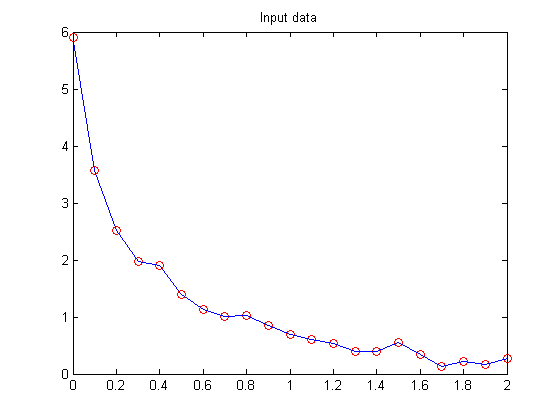
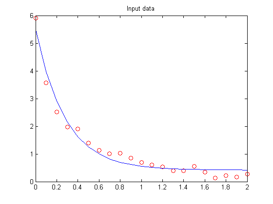

This is a demonstration of the optimal fitting of a non-linear function to a set of data. It uses FMINSEARCH, an implementation of the Nelder-Mead simplex (direct search) algorithm, to minimize a nonlinear function of several variables.
First, create some sample data and plot it.
t = (0:.1:2)'; y = [5.8955 3.5639 2.5173 1.9790 1.8990 1.3938 1.1359 1.0096 1.0343 ... 0.8435 0.6856 0.6100 0.5392 0.3946 0.3903 0.5474 0.3459 0.1370 ... 0.2211 0.1704 0.2636]'; plot(t,y,'ro'); hold on; h = plot(t,y,'b'); hold off; title('Input data'); ylim([0 6])
The goal is to fit the following function with two linear parameters and two nonlinear parameters to the data:
y = C(1)*exp(-lambda(1)*t) + C(2)*exp(-lambda(2)*t)
To fit this function, we've create a function FITFUN. Given the nonlinear parameter (lambda) and the data (t and y), FITFUN calculates the error in the fit for this equation and updates the line (h).
type fitfun
function err = fitfun(lambda,t,y,handle) %FITFUN Used by FITDEMO. % FITFUN(lambda,t,y,handle) returns the error between the data and the values % computed by the current function of lambda. % % FITFUN assumes a function of the form % % y = c(1)*exp(-lambda(1)*t) + ... + c(n)*exp(-lambda(n)*t) % % with n linear parameters and n nonlinear parameters. % Copyright 1984-2002 The MathWorks, Inc. % $Revision: 5.8 $ $Date: 2002/04/15 03:36:42 $ A = zeros(length(t),length(lambda)); for j = 1:length(lambda) A(:,j) = exp(-lambda(j)*t); end c = A\y; z = A*c; err = norm(z-y); set(gcf,'DoubleBuffer','on'); set(handle,'ydata',z) drawnow pause(.04)
Make a guess for initial estimate of lambda (start) and invoke FMINSEARCH. It minimizes the error returned from FITFUN by adjusting lambda. It returns the final value of lambda.
start = [1;0];
options = optimset('TolX',0.1);
estimated_lambda = fminsearch(@(x)fitfun(x,t,y,h),start,options)
estimated_lambda =
3.5897
0.0030
